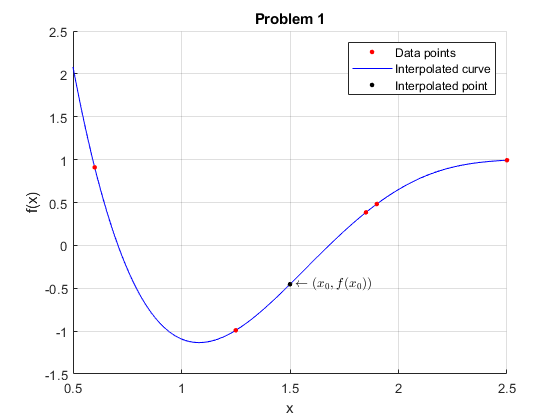
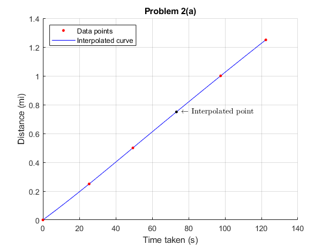
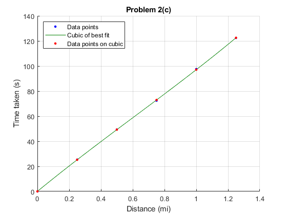
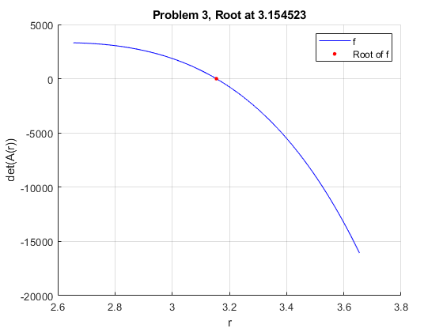

Contents
Copyright
close all; format compact; clc;
fprintf("Engineer: Rodrigo Becerril Ferreyra\n");
fprintf("Company: California State University, Long Beach\n");
fprintf("Project Name: Exam 2\n");
fprintf("Date: 29 October 2020\n");
Engineer: Rodrigo Becerril Ferreyra
Company: California State University, Long Beach
Project Name: Exam 2
Date: 29 October 2020
Problem 1
clear variables;
fprintf("\nProblem 1\n");
x = [0.6, 1.25, 1.85, 1.9, 2.5]; y = [0.909690, -0.990435, 0.384905, 0.482509, 0.993593];
[c, ~, ~] = nfde(x, y);
f_x0 = polyval(c, 1.5);
realvalue = -0.511075;
figure(); hold on;
domain = linspace(0.5, 2.5, 1000);
interpol = plot(domain, polyval(c, domain), 'b');
points = plot(x, y, 'r.', "Markersize", 10);
interpolated_point = plot(1.5, f_x0, 'k.', "Markersize", 10);
legend([points, interpol, interpolated_point], ["Data points", "Interpolated curve", "Interpolated point"]);
grid on;
title("Problem 1"); xlabel("x"); ylabel("f(x)");
text(1.525, f_x0, "$$\leftarrow(x_0, f(x_0))$$", "Interpreter", "latex");
hold off;
fprintf("Coefficients:"); disp(c);
fprintf("f(x0) = %9.6f\n", f_x0);
fprintf("Relative error: %f%%\n", 100 * abs(1 - f_x0/realvalue));
Problem 1
Coefficients: 1.4087 -11.5009 33.3182 -38.8362 14.5184
f(x0) = -0.453635
Relative error: 11.238976%

Problem 2
clear variables;
fprintf("\nProblem 2\n");
pole = [0, 1/4, 1/2, 1, 5/4]; time = [0, 25.4, 49.4, 97.6, 122.4];
f = @(x) spline(pole, time, x);
pole34 = f(3/4); expectedvalue = 72.4;
fprintf("Time at 3/4 mi pole: %f\n", pole34);
fprintf("Relative error: %f%%\n", 100 * abs(1 - pole34/expectedvalue));
figure(); hold on;
domain = linspace(0, 5/4, 500);
interpol = plot(f(domain), domain, 'b');
points = plot(time, pole, 'r.', "Markersize", 10);
interpolated_point = plot(pole34, 3/4, "k.", "Markersize", 10);
legend([points, interpol], ["Data points", "Interpolated curve"], "Location", "northwest");
text(pole34+2.5, 3/4, "$$\leftarrow$$ Interpolated point", "Interpreter", "latex");
grid on;
title("Problem 2(a)"); ylabel("Distance (mi)"); xlabel("Time taken (s)");
hold off;
h = 1e-6; a = 1/4;
m = h/(f(a+h) - f(a));
m = m * 60 * 60;
fprintf("The horse is moving at about %f miles per hour at the 1/4 mi pole.\n", m);
a = 5/4;
m = 60*60*(h/(f(a+h) - f(a)));
fprintf("The horse is moving at about %f miles per hour at the 5/4 mi pole.\n", m);
pole = [0, 1/4, 1/2, 3/4, 1, 5/4]; time = [0, 25.4, 49.4, 72.4, 97.6, 122.4];
c = polyfit(pole, time, 3);
t = @(x) polyval(c, x);
cubic_time = t(pole);
fprintf("[a, b, c, d] = "); disp(c(end:-1:1));
figure(); hold on;
domain = linspace(0, 1.25, 250);
interpol = plot(domain, t(domain), "Color", [0 0.5 0]);
points = plot(pole, time, 'b.', "Markersize", 10);
cubic_points = plot(pole, cubic_time, 'r.', "Markersize", 10);
legend([points, interpol, cubic_points], ["Data points", "Cubic of best fit", "Data points on cubic"], "Location", "northwest");
grid on;
title("Problem 2(c)"); xlabel("Distance (mi)"); ylabel("Time taken (s)");
hold off;
fprintf("cubic times: "); disp(cubic_time);
Problem 2
Time at 3/4 mi pole: 73.328571
Relative error: 1.282557%
The horse is moving at about 36.824164 miles per hour at the 1/4 mi pole.
The horse is moving at about 35.819196 miles per hour at the 5/4 mi pole.
[a, b, c, d] = 0.0730 104.0910 -15.7079 8.6519
cubic times: 0.0730 25.2492 49.2730 72.9556 97.1079 122.5413
 
Problem 3
clear variables;
fprintf("\nProblem 3\n");
A = @(r) det([r^3 -5*r 4 -2 -1; -r 3 -1 r^2 1; 1 2 3*r -2 -1; 4 -2 -1 -2*r 1; 3 -r 1 -1 -2]);
f = @(r) arrayfun(A, r);
a = -10; b = 10;
c = (a + b)/2; last_c = 1e6;
iterations = 100;
while (abs(last_c - c) >= 1e-6) && (iterations > 0)
if sign(f(a)) == sign(f(c))
a = c;
elseif sign(f(b)) == sign(f(c))
b = c;
else
fprintf("Error occured: a, b, c = %f %f %f\n", a, b, c);
end
last_c = c;
c = (a + b)/2;
iterations = iterations - 1;
end
fprintf("c = %f\nf(c) = %f\n", c, f(c));
figure(); hold on;
domain = linspace(c-0.5, c+0.5, 1000);
plotted_line = plot(domain, f(domain), 'b-');
points = plot(c, f(c), 'r.', "Markersize", 10);
legend([plotted_line, points], ["f", "Root of f"]);
grid on;
title(sprintf("Problem 3, Root at %f", c)); xlabel("r"); ylabel("det(A(r))");
hold off;
Problem 3
c = 3.154523
f(c) = 0.000479

Problem 4
clear variables;
fprintf("\nProblem 4\n");
a = [1 2 -1; 3 -4 2]; b = [2 -1; 4 3; -1 5]; c = [a; 1 2 3]; d = [a' b(:, 1)];
result = a(:)' * b(:);
fprintf("(a)"); disp(result);
result = sum((d*c - c*d)*a', "all");
fprintf("(b)"); disp(result);
result = (d'*c + b*a);
result = sum(result(1:2:3, :), "all");
fprintf("(c)"); disp(result);
result = a(2, :) * c(:, 3);
fprintf("(d)"); disp(result);
f = (b*b' - [c*a' b(:, 2)])^2 ./ 100;
result = sum(diag(f)) + sum(diag(f(:, end:-1:1)));
fprintf("(e)"); disp(result);
Problem 4
(a) 23
(b) 71
(c) 6
(d) -5
(e) 11.7000
Problem 5
clear variables;
fprintf("\nProblem 5\n");
fprintf("\n(a)\n");
a = [1 2 3; 2 -3 5; -1 -2 1];
ag = [a [2;7;1]];
fprintf("rank(A) = %d\nrank(A|b) = %d\nnumber of variables = %d\n", rank(a), rank(ag), length(a(1, :)));
fprintf("Set of linear equations (a) has one solution.\n");
fprintf("\n(b)\n");
a = [1 1 -1 1 -1; 1 -1 -1 -1 1; -1 -1 1 -1 -1; 1 -1 1 -1 1; 1 1 1 1 1];
ag = [a [0; 1; -1; 1; 0]];
fprintf("rank(A) = %d\nrank(A|b) = %d\nnumber of variables = %d\n", rank(a), rank(ag), length(a(1, :)));
fprintf("Set of linear equations (b) has no solution.\n");
fprintf("\n(c)\n");
a = [1 4 -2 5; 3 -1 1 -4; -2 1 -2 3; 1 -1 1 -2];
ag = [a [0; 9; -2; 2]];
fprintf("rank(A) = %d\nrank(A|b) = %d\nnumber of variables = %d\n", rank(a), rank(ag), length(a(1, :)));
fprintf("Set of linear equations (c) has one solution.\n");
fprintf("\n(d)\n");
a = [3 -2 -1; -2 4/3 1/3; 1 -2 4];
ag = [a [-1; 3; 5]];
fprintf("rank(A) = %d\nrank(A|b) = %d\nnumber of variables = %d\n", rank(a), rank(ag), length(a(1, :)));
fprintf("Set of linear equations (d) has one solution.\n");
fprintf("\n(e)\n");
a = [1,1,-1; 1,1,1; 1,-1,1];
ag = [a [3;2;1]];
fprintf("rank(A) = %d\nrank(A|b) = %d\nnumber of variables = %d\n", rank(a), rank(ag), length(a(1, :)));
fprintf("Set of linear equations (e) has one solution.\n");
Problem 5
(a)
rank(A) = 3
rank(A|b) = 3
number of variables = 3
Set of linear equations (a) has one solution.
(b)
rank(A) = 4
rank(A|b) = 5
number of variables = 5
Set of linear equations (b) has no solution.
(c)
rank(A) = 4
rank(A|b) = 4
number of variables = 4
Set of linear equations (c) has one solution.
(d)
rank(A) = 3
rank(A|b) = 3
number of variables = 3
Set of linear equations (d) has one solution.
(e)
rank(A) = 3
rank(A|b) = 3
number of variables = 3
Set of linear equations (e) has one solution.